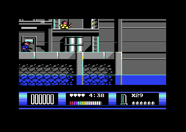
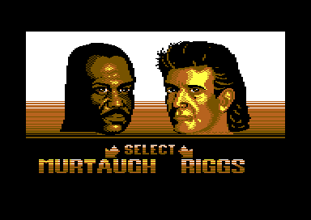

<meta charset="utf-8">
<meta name="viewport" content="width=device-width, initial-scale=1">
<title>{{title}}</title>
<link rel="preconnect" href="https://fonts.googleapis.com">
<link rel="stylesheet" href="https://fonts.googleapis.com/css2?family=Lato:wght@400;700;900&family=IBM+Plex+Mono:wght@400;500&display=swap">
<style>
:root{
  --bg:#23262d; --paper:#e9e7e1; --surface:#ffffff; --surface-2:#f1efea; --line:#d5d3cc; --line-soft:#e0ded8;
  --ink:#2f3136; --ink-soft:#55585f; --ink-mute:#80838a;
  --link:#1f5fa8; --link-hover:#154480; --accent:#1f5fa8;
  --amber:#c25a00; --cyan:#1f5fa8; --coral:#d04a3a; --green:#2a8a4a; --violet:#4a5bd6; --hl:#fff0c2;
  --chip:#2f3136; --chip-ink:#ffffff;
  --c64blue:#40318d; --c64grey:#686868;
  --fd:'Lato',system-ui,sans-serif; --fb:'Lato',system-ui,sans-serif; --fm:'IBM Plex Mono',ui-monospace,Menlo,monospace;
  --col:1080px; --gx:68px; --fs:17px; --lh:1.6; --hw:900; --h1:46px; --h2:26px; --sy:48px; --pp:26px; --r:10px;
  --plate-shadow:0 1px 2px rgba(0,0,0,.05),0 4px 14px rgba(0,0,0,.05);
}
*{box-sizing:border-box}
html{background:var(--bg);min-height:100%}
body{background:var(--paper);color:var(--ink);font-family:var(--fb);font-size:var(--fs);line-height:var(--lh);max-width:var(--col);margin:0 auto;min-height:100vh;padding:0 0 4rem}
h1,h2,h3{font-weight:var(--hw);letter-spacing:-.01em;text-wrap:balance;color:var(--ink);margin:0}
.wrap{padding:0 var(--gx)}
.hero{padding:48px var(--gx) 8px;text-align:left}
.eyebrow{font-family:var(--fm);font-size:12px;letter-spacing:.08em;text-transform:uppercase;color:var(--ink-mute);margin:0 0 10px}
.hero h1{font-size:var(--h1);line-height:1.15;letter-spacing:-.02em;margin:0 0 14px}
.hero .sub{margin:0 0 .6em;color:var(--ink-soft)}
section{padding:var(--sy) 0 24px}
section:last-of-type{border-bottom:none}
.fig{font-family:var(--fm);font-size:12px;letter-spacing:.08em;text-transform:uppercase;color:var(--ink-mute);margin:0 0 10px}
h2.t{font-size:var(--h2);margin-bottom:12px}
.lede{color:var(--ink-soft);margin:0 0 30px}
.plate{background:var(--surface);border:1px solid var(--line);border-radius:var(--r);padding:var(--pp);box-shadow:var(--plate-shadow)}
.cap{font-size:14px;color:var(--ink-mute);margin-top:14px;line-height:1.55}
.cap b{color:var(--ink);font-weight:700}
code{font-family:var(--fm);font-size:.82em;background:var(--chip);color:var(--chip-ink);border-radius:4px;padding:2px 6px;overflow-wrap:break-word;-webkit-box-decoration-break:clone;box-decoration-break:clone}

table.t{border-collapse:collapse;margin:0 0 20px;font-size:15px}table.t td,table.t th{border-bottom:1px solid var(--line);padding:6px 12px 6px 0;text-align:left;vertical-align:top}
</style>
<!--
  Template for a game article. Keep it self-contained: inline CSS and JS,
  fonts are the only external resource, opens from disk. The section below
  shows the parts a section is made of, not which section comes first: the
  kinds of section are listed in kit/skills/core/70-minisite, in no order,
  and this page's order is its own. The best thing to press or hear goes
  as high as the explanation lets it, and every section should have
  something the reader can press. Copy follows kit/style.md and is written
  last.
-->
<!-- tabs -->
<header class="hero">
  <p class="eyebrow">1992 · Ocean Software</p>
  <h1>Lethal Weapon</h1>
  <p class="sub">An eight-way scroller that redraws the whole screen one fifth at a time, a sprite multiplexer for sixteen objects, and a disk whose game-over screen asks for a file the disk does not hold.</p>
</header>
<main class="wrap">
<section id="game">
  <p class="fig">01 · The game</p>
  <h2 class="t">Riggs or Murtaugh, against the clock</h2>
  <p class="lede">You pick one of the two detectives and work through fourteen stages of Los Angeles, starting on the docks, each a level larger than the screen that scrolls in all eight directions.</p>
  <div class="plate"><p class="cap"><b>Stage 1A in play.</b> The panel shows the score, the lives as hearts, the clock, the energy bar, the magazines and the six rounds in the gun.</p></div>
  <p>Each stage has five minutes on the clock. Doors lead to other stages; the last door ends the game. Gunmen hide, patrol and shoot; thugs walk into you; bosses hop across the screen. You shoot, jump and climb ladders. The fire button fires one round a press, six to a magazine.</p>
  <div class="plate"><p class="cap"><b>The select screen.</b> Hold fire and push towards the man you want: right for Riggs, left for Murtaugh. Fire alone does nothing here.</p></div>
</section>
<section id="loads">
  <p class="fig">02 · Three programs</p>
  <h2 class="t">Title, game and ending are separate loads</h2>
  <p class="lede">The disk holds about a hundred files. Three of them are programs; the rest are pictures, maps, sprites and music each program loads.</p>
  <table class="t"><tr><th>Program</th><th>Where</th><th>What it loads</th></tr>
  <tr><td>Title (LOADER)</td><td><code>$C000</code></td><td>the logo sprites, the select screen and portraits, the music (<code>$E000</code>)</td></tr>
  <tr><td>Game (GAM0, GAM1)</td><td><code>$03C0</code>, <code>$E000</code></td><td>for each stage an overlay at <code>$3790</code>, its map, tiles, colours, characters and sprite files</td></tr>
  <tr><td>Ending (111)</td><td><code>$0900</code></td><td>a portrait of the man you played, and the music again</td></tr></table>
  <p>All three carry the same fast loader (<code>$03C3</code> in the game). It sends 256 bytes of code into the disk drive, then takes each file two bits at a time through the serial port, flashing the border with every byte. Stage files are packed; the game unpacks them with its own decoder at <code>$F5D5</code>, which builds three Huffman tables for each block and alternates runs of plain bytes with copies from what it has already written.</p>
</section>
<section id="scroll">
  <p class="fig">03 · The scroller</p>
  <h2 class="t">A fifth of the screen each frame</h2>
  <p class="lede">A level is a map of 288 by 70 characters, built when the stage loads. Two screens take turns: one is shown while the other is redrawn one character over.</p>
  <p>When the player nears an edge, <code>$2570</code> picks one of eight directions. Each frame the scroll moves the fine-scroll registers one pixel and calls one routine from a table of 128 (<code>$178F</code>, by direction, screen and step). Most of these copy four or five rows of the shown screen into the hidden one, shifted by a character. When the fine scroll wraps, the screens swap (<code>$1579</code>), colour RAM is shifted to match (<code>$2B3F</code> and its seven siblings) and the new edge is drawn from the level map (<code>$1593</code>). Every object on the level moves the other way by the same amount.</p>
  <p>The map itself is built by <code>$0673</code> from 2×2-character tiles: 144 tile columns of 35 tiles. The tiles come from the stage's <code>.BLK</code> file and the tile map from its <code>.MAP</code> file, which holds 64 rows. Stage 1A uses rows 29 to 63 of it; stage 1AX, a door away, uses rows 0 to 34 of the same map. The <a href="levels.html">Maps tab</a> draws every stage.</p>
</section>
<section id="objects">
  <p class="fig">04 · Sixteen objects</p>
  <h2 class="t">One table, eight sprites</h2>
  <p class="lede">Everything that moves is one of sixteen objects in a table in zero page. Before each frame they are sorted by line, and the raster interrupt hands them to the eight sprites from the top of the screen down.</p>
  <table class="t"><tr><th>Byte</th><th>Holds</th></tr>
  <tr><td><code>$AF</code>+n</td><td>type: 0 a walking thug, 2 to $22 pickups and hazards, $24 and up an enemy behaviour</td></tr>
  <tr><td><code>$BF</code>+n</td><td>colour, with the ninth bit of x</td></tr>
  <tr><td><code>$CF</code>+n</td><td>sprite frame</td></tr>
  <tr><td><code>$DF</code>+n</td><td>line on screen, 0 for an empty slot</td></tr>
  <tr><td><code>$EF</code>+n</td><td>x</td></tr></table>
  <p>Object 0 is the player and objects 1 and 2 his bullets. The sort (<code>$F2B3</code>) is an insertion sort, cheap because the order rarely changes. The interrupt at <code>$E1AC</code> places one object per sprite until the next one is too far down, then sets itself for 13 lines above it and continues there. Each behaviour is a routine named in a table (<code>$077D</code>) and called by rewriting the operand of one <code>JSR</code> (<code>$0FA6</code>).</p>
</section>
<section id="jump">
  <p class="fig">05 · Two jumps</p>
  <h2 class="t">Riggs jumps as high, and more slowly</h2>
  <p class="lede">A jump is a table of line changes, one a frame. Murtaugh has one at <code>$36A0</code> and Riggs one at <code>$36E2</code>.</p>
  <div class="plate"><canvas id="jcv" width="640" height="200" style="width:100%"></canvas><p><button id="jgo">Jump</button></p><p class="cap"><b>The two tables, played side by side.</b> Each dot is one frame. Both rise 40 lines; Murtaugh lands after 32 frames and Riggs after 40.</p></div>
  <p>Other versions of the game describe Murtaugh as the higher jumper. On the Commodore 64 the height is the same and the difference is time in the air. Each man also has his own sprites: the stage loader swaps the file SP00 for SP0Z when Murtaugh is chosen.</p>
</section>
<section id="panel">
  <p class="fig">06 · Clock, rounds and magazines</p>
  <h2 class="t">A magazine every five seconds</h2>
  <p class="lede">You start with 25 magazines of six rounds. The clock gives you more.</p>
  <p>The clock routine (<code>$F424</code>) adds a magazine each time the seconds digit reaches 0 or 5. Pickups add more: a magazine, energy, a life, 400 points, or a bigger gun (three sizes, each doing one more point of damage, <code>$285C</code>). When the clock reaches 0:00 you lose a life, and the next life starts with 9:00 on the clock.</p>
  <table class="t"><tr><th>Event</th><th>Points</th></tr><tr><td>Hit an enemy</td><td>300</td></tr><tr><td>Kill an enemy</td><td>400</td></tr><tr><td>Kill a boss</td><td>1000</td></tr><tr><td>Points pickup</td><td>400</td></tr></table>
</section>
<section id="music">
  <p class="fig">07 · The sound</p>
  <h2 class="t">Mark Cooksey's music</h2>
  <p class="lede">The title program carries a music driver and three tunes. The ending loads the same file again and plays the title tune for ever.</p>
  <div class="plate"><div id="lw-music"></div><p class="cap"><b>The game's own driver, running in your browser.</b> This player runs the bytes of the file MUSI (<code>$E000</code>-<code>$F5D5</code>) on the site's 6502: <code>$E000</code> starts a tune and <code>$E003</code> plays one frame of it, as the title's raster interrupt calls it. A test beside this page checks every register the page's player writes against the same code run on the title's memory. Tune 0 plays on the title, tune 2 when you choose a man; nothing calls tune 1.</p></div>
  <p>Each voice reads a stream of notes: a note number, then a byte with its length and instrument. Bytes from $60 are commands: play a pattern (with repeats and a transposition), loop, slide, pick a filter sweep. The game itself has no music: its sound effects come from a smaller engine at <code>$F88C</code>, eighteen effects of a few bytes each.</p>
</section>
</main>
<footer style="margin:16px 0 0;padding:22px var(--gx) 0;border-top:1px solid #e0ded8;font-family:'IBM Plex Mono',ui-monospace,Menlo,monospace;font-size:12px;color:#80838a"><a href="https://github.com/gamesexplained/gamesexplained" style="color:#1f5fa8;text-decoration:none">GitHub</a> · <a href="https://discord.gg/3V9GWyRDWV" style="color:#1f5fa8;text-decoration:none">Discord</a><br>© Games Explained contributors. Write-ups, facts and symbol maps are available under <a href="https://creativecommons.org/licenses/by-sa/4.0/" style="color:#1f5fa8;text-decoration:none">CC BY-SA 4.0</a>; code under <a href="https://opensource.org/licenses/MIT" style="color:#1f5fa8;text-decoration:none">MIT</a></footer>
<script src="../../lib/sid.js"></script>
<script src="../../lib/cpu6502.js"></script>
<script>
/* lw-music */
// createDriver for C64Sid: runs the game's own music driver (the file MUSI, $E000-$F5D5) on the
// kit's 6502. init(t) puts the bytes back as loaded and calls $E000 with A = t; play() calls $E003
// once, as the title's raster interrupts do once a frame. The driver only writes the SID.
const LW_TUNES = ['Tune 0: the title', 'Tune 1: not played', 'Tune 2: the select screen'];
const LW_MUSIC = 'TCjmpftIpfxIrcbk0ANMmOOiAo7D5L3H5I3E5Lzr5IzF5L335PAW3vfk0BG9A+XQDI0G5bmQ5qzE5JkE1N7x5L3x5PBkyQHwA0yK4b3N5IX7vdDkhfygALH7MAfJYJADTJ/jjcDkKX8YfQnlnejkyLH7SMiMwuQpD6i5Yuad9OS5cuad+uRoLsDkakpKSp3u5KkAnf3krcLkGGX7nc3kpfxpAJ3Q5Ewx473u5J3r5I3F5Ki9/eTwA0xV4bm65p0X5bnI5p0a5bnk5p0g5bny5p0j5bkA550m5bkO550p5bkc5ykPnTLluUbnnT7lqQCdHeWdLOWdL+WdNeWdO+WdQeWdT+WpAZ0G5b1J5fAZvejk3eXkneXkkAepAZ1P5dAaqQKdT+XQE73o5J3l5Ki5aOWdEeW5yOWdFOWsxeSuxOS5nuadBdS5rOadBtS5guadBNSuw+S99OSd8eS9+uSd9+S9/eSdAOWsROUwG7mx6D3K5PATvQPl0A65teiNReWpAI1H5Y1G5Uwx46zF5LnW5vA53iDl0A655OadIOW9HeVJAZ0d5b0d5dASvRflGHnW5p0X5ZAV/hrlTMvhvRflOPnW5p0X5bAD3hrlufLm8E29KeXwBd4p5RBD3ibl0Bm5AOedJuW9LOVJAZ0s5b0v5dAG/i/lHiPlvSzl0BG9EeV9I+WdEeWQFf4U5Uwd4r0R5Tj9I+WdEeWwA94U5bkc5/BM3jLl0Ee5HOdIKQ+dMuVoSkpKSqi5YueNRuK5beeNR+K8NeW5kOjJf9AIqQCdNeWo8PH+NeUYfeXknTjlqLlo5Z0R5bnI5Z0U5azF5Lkq5/A9vTvl2VTn8AX+O+XQMN4+5dAruUbnnT7lvUHlSQGdQeXQD7kq5x0G5azE5JkE1Eyw4rk45x0G5azE5JkE1KzF5L1J5fB5vU/l8HTJAdA5vRHlGH1J5Z0R5b0U5X1M5Z0U5bzl5L0U5dnI5ZBSvRHl2WjlkEq5aOWdEeW5yOWdFOWpAJ1P5fA3vRHlOP1J5Z0R5b0U5f1M5Z0U5bzl5L0R5dlo5bAZvRTl2cjlsBG5aOWdEeW5yOWdFOWpAJ1P5azE5L0R5ZkA1L0U5ZkB1L0X5ZkC1L0a5ZkD1MowA0wT4K5E5RAEqfDQOq1H5d296NANqQCNR+WtRuVJAY1G5e5H5a1G5dANrUXlGH256I1F5UyP461F5Tj9ueiNReWNFtS9seiNF9RohfxohftgyWvwGjjpYKq9UuWNu+O9XeWNvOOuw+TIjMLkTM7jqQCNxuSNBNSNC9SNEtRMmOOx+8iMwuSouWLmnfTkqQGd/eRMluC9A+VJAZ0D5UxY4LH7jRDlyExY4LH7jQ/lDUjljRjUyExY4LH7nQzlyLH7SMix+50J5ciYGGX7ndPkpfxpAJ3W5GioueXzhfud3+S56POF/J3i5KAATFjgvQzl8BHeDOXwDL3f5IX7veLkhfzQD73T5IX7vdbkhfypAJ0J5aAATFjgvdnknc3kvdzkndDkqQCdCeVMTOCx+53N5Mix+53Q5ExM4LH7nUzlyLH7nUnlyExY4LH7jUTlyIzC5Ki5reiNSOUND+WNGNS5teiNReWpAI1H5Y1G5azC5ExY4HIAAgAACg8ABw4BAgR9vJvr7fGlHtnp6upsr4Lp6eof9BXr7PE5PC05PC0KBQQKBQQLCwsMDAwHBwcICAgAAAAAAAAAAAABAQEAGAAAAAAKAUbQCR0iDSAAAAIACAAAAB8AAAkAAAYAAA4AAAAAAAAAAAABAQABASo8KwAAAQAAAQAAAAIAAEsAAAAAAAAAAAAAzuPu9wwGO2V5h5bj4+Pj5OTk5OTk5BYnKEtfc4qhutTwDi1OcZa95xNCdKngG1qb4ix7zieF6FHBN7Q3xFf1nE4J0KOCbmhuiK/rOZwToUYE3NDcEF7WcjgmQowIuKC4ILys5HBMhIEQcEBwQHhYyOCYCDAgLgEBAQEBAQEBAQEBAgICAgICAgMDAwMDBAQEBAUFBQYGBgcHCAgJCQoKCwwNDQ4PEBESExQVFxgaGx0fICIkJykrLjE0Nzo+QUVJTlJXXGJobnV8g4uTnKWvucTQ3er4/Y0u5goYaQCqoAC9weiZzeSZ2eS9yuiZ0OSZ3OSpApnx5OjIwAPQ46IXqQCdANTKEPqpD40Y1I3G5GADBAYJDBIYJDBIYJDACBAgAgIDBQgMEhwoQFiIuAUIGEFBQUGBISEhISFBQUFBQEBAQIAQEBAQEEBAQEBNTU0ZCScnJycnCAgJWAwMDKmkaWlpaWmKasSagAAAAAAAAAAAAAAAAAAADAwBCAAAAAAAAgIEAggQEDIAAAAAAAAgICAgIICQMgAAAAAAACAgQCAACAgAAAAAAAAACQkACQACAgAAAAAAAAAGBgAGABAQAAAAAAAAAA8PAA8CEyMyQVFhcYGRAAAAABAQEBCAAAAAAAAAAAAAQEBAQBAAAAAAAAAAAAACAwMDAQAAAAAAAAAAAAEBASEBAAAAAAAAAAAAeAsmQWuQlZqeo6jn6Ojo6Ojo6Ojo6AABAAIAAwAEAAUABgAHAAgACQAKAAsADAANAA4ADwAQABEAEgATABQAFQAWABcAGAAZABoAGwAcAB0AHgAfACAAIQAiACMAJAAkACMAIgAhACAAHwAeAB0AHAAbABoAGQAYABcAFgAVABQAEwASABEAEAAPAA4ADQAMAAsACgAJAAgABwAGAAUABAADAAIAAQAAfwAEAAcADAAQABMAGAAYABMAEAAMAAcABAAAfwADAAcADAAPABMAGAAYABMADwAMAAcAAwAAfwAAAAAAAAAAAAAAAAwADAAMAAwADAAMAAwAAAwADAAMAAwADAAMAAwAf/4ADP8M/gz+DP0M/Qz9DP0M/Az8DPsM+wz6DPoM+Qz5DPj0+H8ABAcAfwQHDAd/BwwQfwADBwB/AwcMB38HDA8MfxAQABCHBgAE0KAAoAACAAIAKgAqbK+C0/Y11tvg6enq6Ojp8/PzYwpiAWoCLKUwpSykNaUzpS6kMaU1pTikPKQ6pDikN6Q1rGtBhEGCQYItREGCQYI/VD9SP1ItRD9SP1I9VD1SPVItRD1SPVI8VDxSPFItRDxSPFJBhEGCQYItREGCQYJBimsdpCmiKaIdpCmiKaIbpCeiJ6IboieiJ6InohmkJaIloiWiJaQlohikJKIkohiiJKIkoiSiHaxrYwpiAWoBYAk2sjeyNrIysjSqYApgCTayN7I2sjKyNKpgCmAKYApgDGAKYAgtRC1ELUItQi1EZAAAZAD0NKxgCmAKZyuqKKoqrCuqKKoqrDSENII0gjSENII0gjSENII0gjSENII0gjBUMFIwUjBUMFIwUjBUMFIwUjBUMFIwUi9kL2IvYi9kL2IvYi9kL2IvYi9kL2IvYjSENII0gjSENII0gi9UL1IvUi9UL1IvUmQBGGQBGDSENII0gjSENII0gjSENII0gjSENII0gjBUMFIwUjBUMFIwUjBUMFIwUjBUMFIwUi9kL2IvYi9kL2IvYi9kL2IvYi9kL2IvYjSENII0gjSENII0gi9UL1IvUi9UL1IvUmccqhiqG6ojqhyqGKobqiOqagMcpBykHKQcpBykHKQcpBykGKQYpBikGKQYpBikGKQYpBukG6QbpBukG6QbpBukG6QcpBykHKQcpGoCI6QjpCOkI6RkAgBkAgBqAxykHKQcpBykHKQcpBykHKQYpBikGKQYpBikGKQYpBikG6QbpBukG6QbpBukG6QbpBykHKQcpBykI6QjpCOkI6RnNKQvpDekNqhgBDSkMKQ5pDeoYAQ5pDakM6QtpjCkM6Q2pDekNqQ0pC+oYAQ0pC+kN6Q2qGAENKQwpDmkN6hgBDmkNqQzpDymO6Q5pDekO6Q8pDukNKhgBDykO6Q5pDSoNKQ2pDekNKkvpDOkNqQ3pDmkN6Q2pDSkL6QzpDakN6Q7pDmkN6Q2pDSpNqI3ojaiMqI0qTuiPKI7ojmiO6k8pDukN6g2qDSkL6Q3pDaoYAQ0pDCkOaQ3qGAEOaQ2pDOkLaYwpDOkNqQ3pDakNKQvqGAENKQvpDekNqhgBDSkMKQ5pDeoYAQ5pDakM6Q8pjukOaQ3pDukPKQ7pDSoYAQ7pDykN6Q0qGAEO6Q8pDekNKhgBDukPKQ7pD+mO6Q5pDakNKQ3pC+kNKhgBDSkN6QvpDSoNKQ0pDKkMKQrqGAEL6QwpC+kM6YvpC2kK6QqpCukKqQoqGAEPKQ7pDmkNKg0pDakN6Q0qS+kM6Q2pDekOaQ3pDakNKQvpDOkNqQ3pDukOaQ3pDakPKQ7pDmkNKg0pDakN6Q0qS+kM6Q2pDekOaQ3pDakNKQvpDOkNqQ3pDukOaQ3pDakNKk2ojeiNqIyojSpO6I8ojuiOaI7qTykO6Q3qDaoZiiEKIIogiiEKIIogiiEKIIogiiEKIIogiRUJFIkUiRUJFIkUiRUJFIkUiRUJFIkUiNkI2IjYiNkI2IjYiNkI2IjYiNkI2IjYiiEKIIogiiEKIIogiNUI1IjUiNUI1IjUiiEKIIogiiEKIIogiiEKIIogiiEKIIogiRUJFIkUiRUJFIkUiRUJFIkUiRUJFIkUiNkI2IjYiNkI2IjYiNkI2IjYiNkI2IjYiiEKIIogiiEKIIogiiEKIIogiiEKIIogiRUJFIkUiRUJFIkUiRUJFIkUiRUJFIkUiGEIYIhgiGEIYIhgiGEIYIhgiGEIYIhgiNkI2IjYiNkI2IjYiNkI2IjYiNkI2IjYiNUI1IjUiNUI1IjUiNUI1IjUiNUI1IjUiiEKIIogiiEKIIogiiEKIIogiiEKIIogiiEKIIogiiEKIIogiiEKIIogiiEKIIogiiEKIIogiiEKIIogiiEKIIogiiEKIIogiRUJFIkUiRUJFIkUiNUI1IjUiNUI1IjUiiEKIIogiiEKIIogiiEKIIogiiEKIIogiRUJFIkUiRUJFIkUiRUJFIkUiRUJFIkUiNkI2IjYiNkI2IjYiNkI2IjYiNkI2IjYiiEKIIogiiEKIIogiNUI1IjUiNUI1IjUiiEKIIogiiEKIIogiiEKIIogiiEKIIogiRUJFIkUiRUJFIkUiRUJFIkUiRUJFIkUiNkI2IjYiNkI2IjYiNkI2IjYiNkI2IjYiiEKIIogiiEKIIogiiEKIIogiiEKIIogiiEKIIogiiEKIIogiiEKIIogiiEKIIogiRUJFIkUiRUJFIkUiRUJFIkUiRUJFIkUiNkI2IjYiNkI2IjYiNkI2IjYiNkI2IjYiiEKIIogiiEKIIogiiEKIIogiiEKIIogiiEKIIogiiEKIIogiiEKIIogiiEKIIogiRUJFIkUiRUJFIkUiRUJFIkUiRUJFIkUiNkI2IjYiNkI2IjYiNkI2IjYiNkI2IjYiiEKIIogiiEKIIogiiEKIIogiiEKIIogiiEKIIogiiEKIIogiiEKIIogiiEKIIogiRUJFIkUiRUJFIkUiRUJFIkUiRUJFIkUiNkI2IjYiNkI2IjYiNkI2IjYiNkI2IjYiiEKIIogiiEKIIogiiEKIIogiiEKIIogiRUJFIkUiRUJFIkUiRUJFIkUiRUJFIkUiGEIYIhgiGEIYIhgiGEIYIhgiGEIYIhgiNkI2IjYiNkI2IjYiNkI2IjYiNkI2IjYiNUI1IjUiNUI1IjUiNUI1IjUiNUI1IjUiiEKIIogiiEKIIogiiEKIIogiiEKIIogiiEKIIogiiEKIIogiiEKIIogiiEKIIogiiEKIIogiiEKIIogiiEKIIogiiEKIIogiRUJFIkUiRUJFIkUiNUI1IjUiNUI1IjUmYcxBzELUQcxBzEHMQtRBzEGMQYxC1EGMQYxBjELUQYxBvEG8QtRBvEG8QbxC1EG8QcxBzELUQcxCPEI8QtRCPEHMQcxC1EHMQcxBzELUQcxBjEGMQtRBjEGMQYxC1EGMQbxBvELUQbxBvEG8QtRBvEHMQcxC1EHMQcxBzELUQcxBjEGMQtRBjEGMQYxC1EGMQVxBXELUQVxBXEFcQtRBXEG8QbxC1EG8QbxBvELUQbxCPEI8QtRCPEI8QjxC1EI8QcxBzELUQcxBzEHMQtRBzEHMQcxC1EHMQcxBzELUQcxBzEHMQtRBzEHMQcxC1EHMQYxBjELUQYxCPEI8QtRCPEHMQcxC1EHMQcxBzELUQcxBjEGMQtRBjEGMQYxC1EGMQbxBvELUQbxBvEG8QtRBvEHMQcxC1EHMQjxCPELUQjxBzEHMQtRBzEHMQcxC1EHMQYxBjELUQYxBjEGMQtRBjEG8QbxC1EG8QbxBvELUQbxBzEHMQtRBzEHMQcxC1EHMQcxBzELUQcxBzEHMQtRBzEGMQYxC1EGMQYxBjELUQYxBvEG8QtRBvEG8QbxC1EG8QcxBzELUQcxBzEHMQtRBzEHMQcxC1EHMQcxBzELUQcxBjEGMQtRBjEGMQYxC1EGMQbxBvELUQbxBvEG8QtRBvEHMQcxC1EHMQcxBzELUQcxBjEGMQtRBjEGMQYxC1EGMQVxBXELUQVxBXEFcQtRBXEG8QbxC1EG8QbxBvELUQbxCPEI8QtRCPEI8QjxC1EI8QYxBjELUQYxBjEGMQtRBjEFcQVxC1EFcQVxBXELUQVxBvEG8QtRBvEG8QbxC1EG8QjxCPELUQjxCPEI8QtRCPEHMQcxC1EHMQcxBzELUQcxBzEHMQtRBzEHMQcxC1EHMQcxBzELUQcxBzEHMQtRBzEGMQYxC1EGMQjxCPELUQjxGZgAGACa2AAYAJrYABgAmsf9BXr7PFMqPRMmvSpBY279KkAjbj0jbr0rrj0qQCF9b3d9Mn/8OoKJvUKJvUKJvUKJvUYafWF9KX1aVaF9e649KAAjLn0sfRIKQ+Nt/RoSkpKSq669PD7ogCOuvSOu/TJAvADIF70qRqNGNTuufSsufTAENDQTP7zqr299BiF8b3N9BiF86AAhPCE8rHwSkpKSo0Y1K639MrQ/bHyKQ+NGNSut/TK0P3I0OHm8ebzpfFKsNhg7rv0rbv0yQWQA+669GC9tfSNBvS9tvSNB/Rg3fQAAAAAAAAAAgQGCAoMAAIAAAAAAAAAAAIEBggKDAIEBAAAAAAAAAAAAAABAQECAQEBAgEBAQIBAQECAQEBAgMEAwUDBAMFAQEBAgEBAQIBAQECAQEBAgYGBgcGBgYHAAAAAAEBAQIBAQECAQEBAgEBAQIDBAMFAwQDBQEBAQIGBgYHBgYGBwEBAQIBAwECAQEEAgEBAQIBAQECAQMBAv8KICAgFyAgIAogCiAYICAgCiAgIBggCiAgIAogGCAgIAogICAYIAogICAKIBwYFyAKICAgGCAYIAogICAaIBogCiAgIBggGCAKICAgGhoaIAogCiAYICAgCgwKIBoZGCAKICAgICAKIBggICAKIBggCiAgICAgCiAYICAgFRYYGg==';
function createDriver(D, C64Cpu) {
  const base = new Uint8Array(0x10000);
  const bin = atob(D.music); for (let i = 0; i < bin.length; i++) base[0xE000 + i] = bin.charCodeAt(i);
  const sid = new Uint8Array(25);
  let m = base.slice(), cpu = null, writes = [], bus = 0;
  const io = {
    read(ad) { if (ad >= 0xD400 && ad < 0xD800) return bus; throw new Error('read $' + ad.toString(16)); },
    write(ad, val) { if (ad >= 0xD400 && ad < 0xD800) { const r = ad & 0x1F; if (r < 25) { sid[r] = val; writes.push(r, val); } bus = val; return; } throw new Error('write $' + ad.toString(16)); },
  };
  const run = (ad, a) => cpu.call(ad, { a: a || 0, x: 0, y: 0 }, { maxSteps: 200000 });
  return {
    sid,
    get writes() { return writes; },
    init(t) { m = base.slice(); cpu = new C64Cpu.CPU(m, { port: 0x35, io }); sid.fill(0); bus = 0; writes = []; run(0xE000, t); },
    stop() { if (m) m[0xE4C6] = 0; sid[4] = sid[11] = sid[18] = 0; },
    play() { writes = []; run(0xE003); },
    playing() { return !!(m && m[0xE4C6]); },
  };
}
// end of lw-music
</script>
<script>
const JM = [-4, -4, -4, -4, -4, -4, -4, -2, -2, -2, -2, -1, -1, -1, -1, 0, 0, 1, 1, 1, 1, 2, 2, 2, 2, 4, 4, 4, 4, 4, 4, 4, 127], JR = [-4, -4, -4, -4, -4, -2, -2, -2, -2, -2, -2, -2, -1, -1, -1, -1, -1, -1, 0, 0, 0, 0, 1, 1, 1, 1, 1, 1, 2, 2, 2, 2, 2, 2, 2, 4, 4, 4, 4, 4, 127];
(function () {
  const cv = document.getElementById('jcv'), x = cv.getContext('2d');
  function draw(n) {
    x.fillStyle = '#fff'; x.fillRect(0, 0, 640, 200);
    [[JM, '#c25a00', 'Murtaugh', 40], [JR, '#1f5fa8', 'Riggs', 360]].forEach(([t, c, name, ox]) => {
      let y = 160; x.fillStyle = c; x.font = '13px sans-serif'; x.fillText(name, ox, 190);
      for (let i = 0; i < Math.min(n, t.length) && t[i] !== 127; i++) { y += t[i]; x.fillRect(ox + i * 6, y, 4, 4); }
    });
  }
  let n = 0, timer = 0; draw(99);
  document.getElementById('jgo').onclick = () => { clearInterval(timer); n = 0; timer = setInterval(() => { draw(++n); if (n > 41) clearInterval(timer); }, 40); };
  if (window.C64Sid) C64Sid.mount(document.getElementById('lw-music'), { driver: createDriver, data: { music: LW_MUSIC }, tunes: LW_TUNES });
})();
</script>
